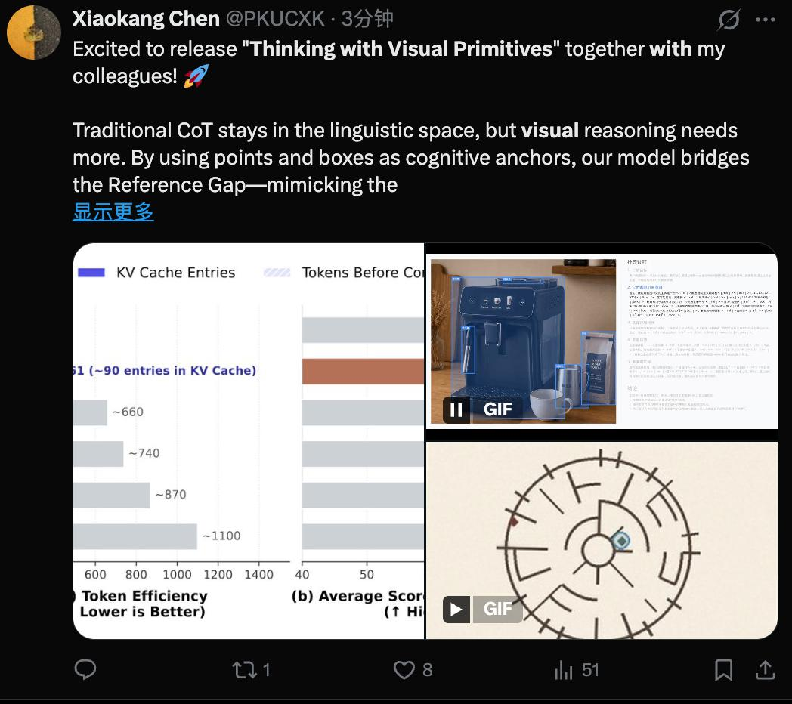
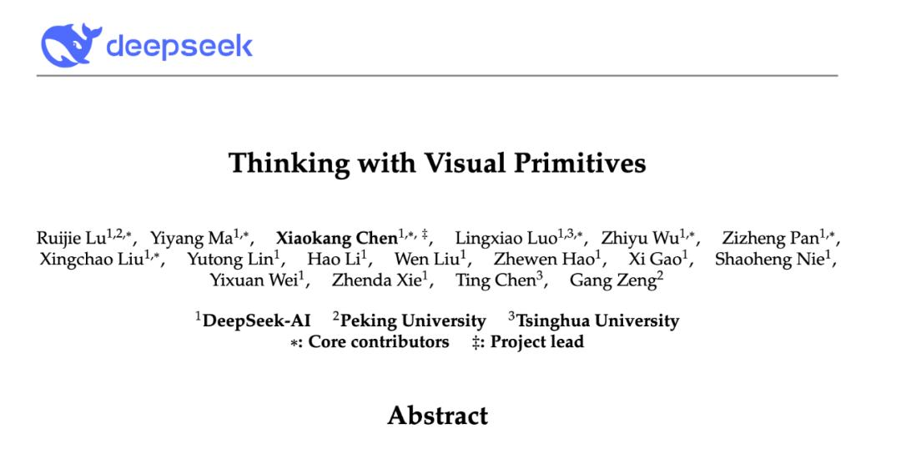
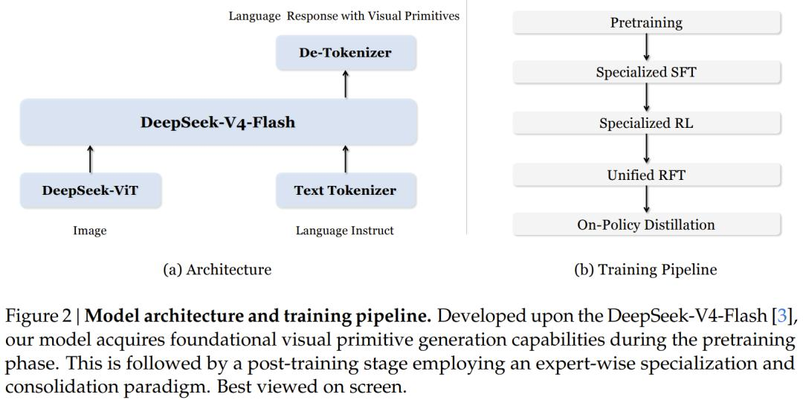
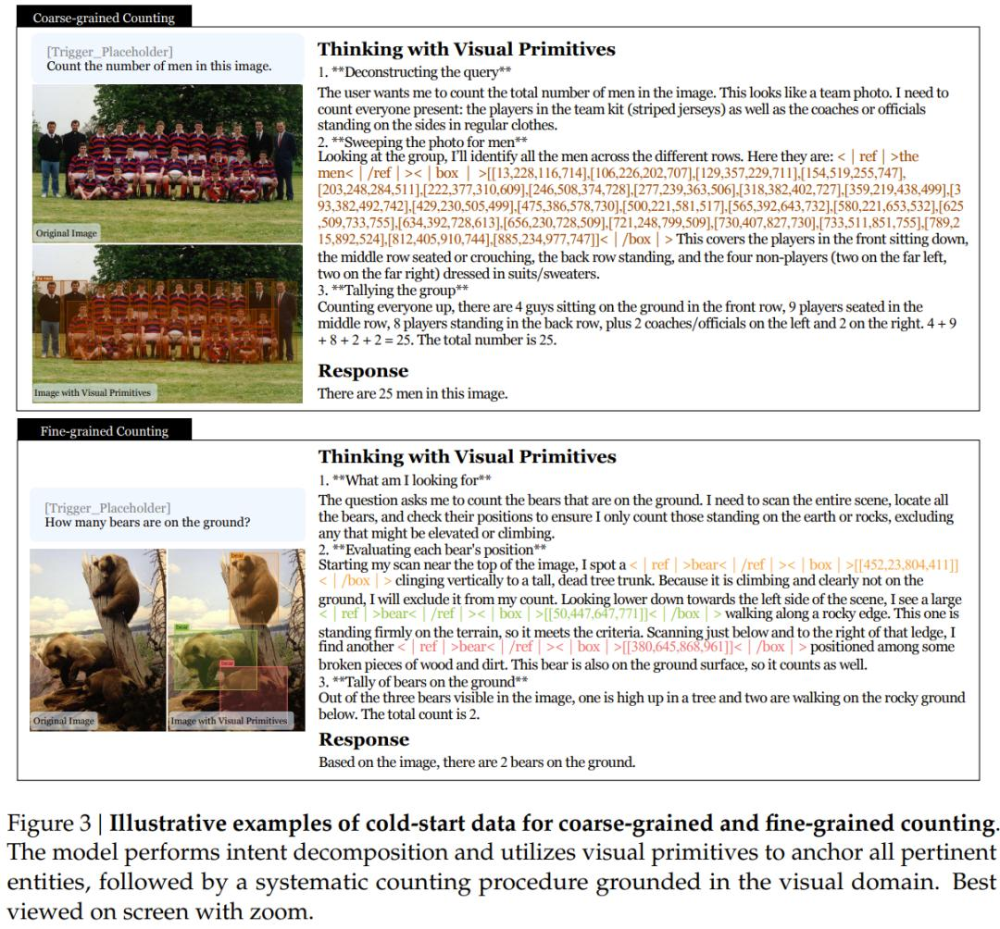

DeepSeek多模态技术范式公布，以视觉原语思考
Thinking with Visual Primitives
虽迟但到，五一长假将至，DeepSeek 给大家公开新技术了。
昨天，DeepSeek 陈小康一个 X 消息，让大家开始关注 DeepSeek 的多模态。

之后，一些用户就已经可以在 DeepSeek 网页端和 App 上体验其多模态能力。
而就在刚刚，DeepSeek 在 Github 上正式发布了多模态模型，公布了背后的技术报告。
实打实的新鲜出炉！而且是开创性的推理范式。

项目地址：https\://github.com/deepseek-ai/Thinking-with-Visual-Primitives
技术报告：https\://github.com/deepseek-ai/Thinking-with-Visual-Primitives/blob/main/Thinking_with_Visual_Primitives.pdf
下面我们就基于 DeepSeek 这篇技术报告，具体看看 DeepSeek、北京大学、清华大学又创造了怎样的奇迹。
这篇论文名叫「Thinking with Visual Primitives（以视觉原语思考）」。它提出的问题，几乎击中了当前所有多模态大模型的软肋：这些模型能「看见」，但不一定能「想清楚」。
给一张密集的人群照片，问 GPT-5.4「图里有多少人」，它很可能数错。给 Claude Sonnet 4.6 一张复杂电路图，问「左边的红色电容在右边电感的左侧还是右侧」，它的回答往往语焉不详，甚至前后矛盾。这不是模型看不清图片的问题，而是模型在「思考」时根本抓不住它想谈的视觉对象。
DeepSeek 把这个问题命名为「Reference Gap」（指代鸿沟），并给出了一套完整的解法。
背景：「看清」和「想清」是两件事
要理解这个问题，先想象你在向一个看不见你屏幕的朋友描述一张复杂的棋盘布局。你说「左边那个棋子要吃掉中间偏右一点那个棋子」，然而对方根本不知道你在说哪两颗棋子。
这正是现有多模态大模型在推理时的处境。它们用自然语言构建「思维链」（CoT），但自然语言天生模糊：「左边那个大的」、「靠近中央的红色物体」，这些描述在密集场景里根本无法精确定位。模型的注意力在推理过程中逐渐「漂移」，越说越乱，最后得出错误结论。
学术界此前的应对方案，主要是让模型「看得更清楚」：对图片进行高分辨率切割、动态分块，确保模型能感知到细节。这解决的是「感知鸿沟」（Perception Gap）。
但 DeepSeek 的论文指出，感知能力再强，也代替不了精确的「指代能力」。「看见」和「能说清楚在说哪个」，是两件不同的事。
架构：站在 V4-Flash 肩膀上
这项工作以 DeepSeek 刚发布的 V4-Flash 为语言主干 —— 这是一个 284B 总参数、推理时激活 13B 参数的混合专家模型（MoE）。视觉编码部分则使用 DeepSeek 自研的 ViT（视觉 Transformer），支持任意分辨率输入。

值得注意的是，这支团队的核心贡献在于提出了一套完整的「训练哲学」：如何用极少的视觉 token，教会模型在推理过程中精确指代视觉对象。
核心创新一：把坐标变成「思维单元」
这篇论文最核心的思路，用一句话说就是：把点坐标和边界框（Bounding Box）变成推理的基本单位，像文字一样穿插在思维链里。
传统做法中，边界框是输出的一部分：模型先想清楚，再告诉你「目标在图片左上角坐标 [100,200,300,400]」。这是事后标注，不是思考工具。
DeepSeek 的做法不同。模型在推理过程中，每当提到一个视觉对象，就同步输出它的坐标：
「扫描图片寻找熊，找到一只 \<|ref|> 熊 \<|/ref|>\<|box|>[[452,23,804,411]]\<|/box|>，它正在爬树，不在地面上，排除。再往左下看，找到另一只 \<|ref|> 熊 \<|/ref|>\<|box|>[[50,447,647,771]]\<|/box|>，站在岩石边缘，符合条件。」
这就像人类在数东西时会用手指逐一点过去。坐标不再是答案，而是推理过程中消除歧义的「锚点」。模型的逻辑链被钉在图片的物理坐标上，不会漂移。
这套机制有两种「原语」（Primitives）：边界框（\<|box|>）用于需要定位和尺寸信息的对象；点坐标（\<|point|>）用于更抽象的空间指代，比如迷宫探索轨迹或曲线追踪路径。
核心创新二：7056 倍的视觉压缩
另一个令人印象深刻的技术创新，来自架构层面的压缩。
对于一张 756×756 的图片，传统方案需要大量视觉 token 喂给语言模型。DeepSeek 的流程是这样的：图片先经过 ViT 处理，生成 2916 个图像块 token；再经过 3×3 空间压缩，合并为 324 个 token 输入语言模型；最后，内置在 V4-Flash 里的「压缩稀疏注意力」（Compressed Sparse Attention，CSA）机制，将 KV 缓存进一步压缩 4 倍，最终只剩 81 个视觉 KV 条目。
从原始像素到最终缓存条目，整体压缩比为 7056 倍。
这意味着，对于一张 800×800 的图片，这个模型只需要约 90 个 KV 缓存条目，而 Claude Sonnet 4.6 需要约 870 个，Gemini-3-Flash 需要约 1100 个。论文的论点是：精确的空间指代能力，可以在一定程度上弥补视觉 token 不足的问题。模型不需要「看更多」，而需要「指更准」。
核心创新三：冷启动数据的精心设计
技术创新的第三个维度，在于训练数据的构建方式。
团队首先爬取了近 10 万个与目标检测相关的数据集，经过两轮严格筛选（语义审核和几何质量审核），最终保留约 3.17 万个高质量数据源，生成超过 4000 万条训练样本。
在「思考与视觉原语」的专项冷启动数据上，团队设计了四类任务。
第一类是计数，分粗粒度（「图里有多少人」）和细粒度（「穿蓝色衣服的人有几个」）两种。对于粗粒度计数，模型学习「批量锁定」—— 一次性框出所有候选对象再数；对于细粒度计数，则学习逐一扫描、逐一核对属性。两种策略对应不同认知负荷，分别训练。

第二类是空间推理和视觉问答，大量利用 GQA 数据集（自然场景）和 CLEVR 工具链（可控合成场景）生成多跳推理样本，迫使模型在每一步推理时都用边界框锁定涉及的对象。

第三类是迷宫导航，共生成 46 万条样本。团队用 DFS（深度优先搜索）、Prim 和 Kruskal 算法生成矩形、圆形、六边形三种拓扑结构的迷宫，并专门设计了「表面可解但实际无解」的迷宫来训练模型的鲁棒性。模型需要用点坐标记录每一步探索轨迹，回溯时也要用坐标标记已排除路径。

第四类是路径追踪，共 12.5 万条样本。给定一张多条贝塞尔曲线相互交叉的图，要求模型追踪指定起点的曲线到达终点。关键挑战在于「交叉歧义消解」：两条线交叉时，模型必须判断哪一条才是目标曲线的延续，而不是用颜色取巧 —— 专门设计了所有曲线颜色相同的测试版本。

训练流程：「先分家，再合体」
后训练阶段，团队采用「先专家化，后统一」的策略。
第一步，用边界框数据和点坐标数据分别训练两个专家模型（FTwG 和 FTwP），避免两种模态在数据量较少时互相干扰。
第二步，对两个专家模型各自进行强化学习（RL），使用 GRPO 算法。奖励设计非常精细：格式奖励（输出格式是否正确）、质量奖励（LLM 评判思考内容和答案是否一致）、精度奖励（任务特定）三路并行。计数任务使用平滑指数衰减奖励而非二值对错，迷宫任务的奖励分解为五个子项（因果探索进度、探索完整性、穿墙惩罚、路径有效性、答案正确性），都是为了给模型提供密集而信息丰富的学习信号。
第三步，用两个专家模型的 rollout 数据进行统一的强化微调（Unified RFT），再从预训练模型重新初始化开始训练，得到统一模型 F。
第四步，用 On-Policy Distillation（在线策略蒸馏）弥合统一模型与专家模型之间的性能差距 —— 让学生模型自己生成轨迹，然后最小化其输出分布与专家分布之间的 KL 散度。
实验结果：在「最难的那类题」上超越 GPT-5.4
论文在 11 个基准测试上进行了评测，与 Gemini-3-Flash、GPT-5.4、Claude Sonnet 4.6、Gemma4-31B、Qwen3-VL-235B 等主流模型对比（所有 frontier 模型均通过 API 评测，使用统一提示词）。

结果概要如下：
在计数任务上，该模型在 Pixmo-Count（精确匹配）上得分 89.2%，超过 Gemini-3-Flash 的 88.2%，大幅领先 GPT-5.4 的 76.6% 和 Claude Sonnet 4.6 的 68.7%。在细粒度计数上（DS_Finegrained_Counting），以 88.7% 超过 Qwen3-VL 的 87.2%，位居第一。
在空间推理的多个基准上，整体表现与头部模型持平或略有超越，在 MIHBench（85.3%）和 SpatialMQA（69.4%）上均排名第一。
最具代表性的差距出现在拓扑推理任务上。在迷宫导航（DS_Maze_Navigation）上，该模型得分 66.9%，而 GPT-5.4 为 50.6%、Gemini-3-Flash 为 49.4%、Claude Sonnet 4.6 为 48.9%—— 所有 frontier 模型都只能答对一半，而这个模型提升了约 17 个百分点。在路径追踪（DS_Path_Tracing）上，该模型 56.7% vs. GPT-5.4 的 46.5%、Gemini-3-Flash 的 41.4%，差距同样悬殊。
论文诚实地指出：「所有 frontier 模型在拓扑推理任务上均表现欠佳，说明多模态大模型的推理能力仍有相当大的提升空间。」
下面展示了几个定性示例：


局限与未来
论文没有回避几个已知的局限性。
当前模型需要明确的「触发词」才会启用视觉原语机制 —— 它还不能自主判断什么时候该「用手指」。
受输入分辨率限制，在极细粒度的视觉场景中，视觉原语的位置偶尔会不够精准。团队认为与现有高分辨率感知方案的结合是自然的下一步。
用点坐标解决复杂拓扑推理问题，目前的跨场景泛化能力仍然有限。
结语：一种新的「思考姿势」
这篇论文的意义，不只是在几个榜单上拿了第一。
它提出的问题 ——「推理过程中语言指代的歧义性是多模态模型的根本瓶颈之一」—— 在此之前并不是学界的主流叙事。
主流的努力方向是更大的模型、更高的分辨率、更多的训练数据。这篇论文给出了另一条路：不是让模型「看更多」，而是让模型「指更准」，用坐标代替语言描述，用空间锚点稳定逻辑链。
从这个角度看，「Thinking with Visual Primitives」更像是在给多模态推理增添一种「思考姿势」—— 一种人类在处理复杂视觉任务时本能就会使用、但 AI 此前一直缺失的姿势：用手指点着想。